Phần I: Phần Mềm Chiến Thuật & Hình Học Sân Đấu Cuối Sân
Mối quan hệ tương hỗ giữa kỹ thuật và chiến thuật, lịch sử tiến hóa lối chơi và quy luật hình học phân giác cuối sân
1. Lời Tựa Của Tiến Sĩ Allen Fox: Chiến Thuật Là Phần Mềm, Kỹ Thuật Là Phần Cứng
Có hơn hai mươi triệu người chơi quần vợt tại Hoa Kỳ và phần lớn trong số họ đều đang thi đấu dưới mức năng lực thực tế của mình. Tại sao lại có nghịch lý đáng buồn này? Câu trả lời nằm ở chỗ các phương pháp huấn luyện truyền thống thường chỉ chăm chú vào việc dạy người học cách đánh quả bóng đẹp hơn, thay vì dạy họ cách thi đấu thông minh hơn để giành chiến thắng.
Để phát huy trọn vẹn tiềm năng thể thao của bạn, việc sở hữu những cú đánh uy lực và có kiểm soát chỉ là một nửa chặng đường. Yếu tố quan trọng hơn gấp bội là khả năng thấu hiểu cách thức vận dụng các cú đánh đó trên bàn cờ chiến thuật. Đó chính là bản chất của chiến lược thi đấu.
Hãy hình dung lối chơi quần vợt của bạn giống như một hệ thống máy vi tính. Các cú đánh kỹ thuật đóng vai trò là phần cứng, trong khi chiến thuật thi đấu chính là phần mềm điều khiển. Một người dùng non nớt có thể lầm tưởng rằng mình đã giải quyết xong mọi việc khi đầu tư mua sắm một dàn máy móc phần cứng đắt tiền. Thế nhưng, phần cứng sẽ hoàn toàn vô dụng nếu không có phần mềm chỉ dẫn nó phải làm gì. Tương tự như vậy, những cú đánh đẹp mắt nhất cũng trở nên vô nghĩa nếu thiếu vắng một tư duy chiến lược định hướng đường bay của quả bóng.
2. Lịch Sử Tiến Hóa Chiến Thuật Quần Vợt Thế Giới
Kỹ thuật và chiến thuật luôn phát triển song hành và tác động tương hỗ lẫn nhau trong suốt chiều dài lịch sử quần vợt.
Từ những ngày đầu cho tới Thế chiến thứ hai, quần vợt chủ yếu được vận hành từ đường cuối sân. Những huyền thoại vĩ đại như Bill Tilden, Bill Johnston, Rene Lacoste, Henri Cochet và Fred Perry chỉ tiến lên lưới sau khi đã ép đối thủ vào thế hiểm nghèo bằng những cú đánh bóng bền chặt chẽ. Lối chơi thời kỳ này sử dụng các cú cắt chìm hoặc đánh phẳng để bào mòn sức chịu đựng của đối thủ.
Mọi chuyện thay đổi hoàn toàn khi Jack Kramer xuất hiện vào thập niên 1940. Kramer phát triển cú giao bóng sấm sét và lập tức lao lên lưới áp sát (serve-and-volley) trên mọi quả giao bóng cũng như mọi pha bóng ngắn. Kramer chứng minh một quy luật mang tính cách mạng: một tay vợt cuối sân dù tài ba đến đâu rốt cuộc cũng sẽ sụp đổ trước một đợt tấn công bão táp trên lưới không ngừng nghỉ.
Kramer cũng chính là cha đẻ của khái niệm "quần vợt xác suất cao" (percentage tennis), nơi hình học sân bãi trở thành yếu tố quyết định lựa chọn cú đánh. Đến thập niên 1960, Rod Laver tạo nên bước nhảy vọt tiếp theo khi phát triển các cú đánh xoáy cuộn topspin cực nặng ở cả hai bên thuận tay và trái tay, giúp bóng bay qua lưới với tốc độ lớn nhưng vẫn cắm nhanh xuống sân để vượt qua tầm vợt của các tay vợt bắt lưới.
Ngày nay, như tấm gương của Brad Gilbert đã chứng minh, một tay vợt không sở hữu thể chất phi thường vẫn có thể vươn lên nhóm dẫn đầu thế giới nhờ xây dựng một lối chơi cân bằng, đa dạng và biết sử dụng trí tuệ sắc bén để khai thác triệt để điểm yếu của đối thủ.
3. Hình Học Sân Đấu Cuối Sân: Tại Sao Đánh Chéo Sân Luôn An Toàn Hơn Dọc Dây?
Nhiều người chơi nghiệp dư thường nôn nóng tung ra những cú đánh dọc dây mạo hiểm và phải trả giá đắt bằng hàng loạt lỗi tự đánh hỏng. Trên thực tế, quy luật vàng của mọi chuyên gia chiến thuật là: khi ở thế giằng co từ vạch cuối sân, hướng đánh có xác suất an toàn cao nhất luôn là đánh chéo sân (crosscourt).
Có ba lý do hình học và vật lý cốt lõi giải thích cho nguyên tắc này:
Thứ nhất, mép lưới ở giữa sân luôn võng xuống mức thấp nhất, chỉ cao khoảng chín mươi mốt centimet so với mặt đất, trong khi mép lưới ở hai cột biên cao hơn tới mười lăm centimet. Đường bóng chéo sân bay qua đúng phần võng nhất của lưới, mang lại biên độ an toàn tuyệt đối.
Thứ hai, sân quần vợt theo đường chéo dài hơn đường thẳng dọc dây. Theo định lý Pythagoras trong hình học, đường chéo nối hai góc sân là cạnh huyền của một tam giác vuông, dài hơn đường dọc dây tới hơn một mét hai mươi centimet. Điều này đồng nghĩa với việc bạn có thể đánh bóng với lực mạnh hơn, biên độ dài hơn mà bóng vẫn nằm gọn trong sân.
Thứ ba, đánh chéo sân đưa bạn vào một vị trí hình học tối ưu nhất để phòng ngự trước cú đánh tiếp theo của đối thủ. Khi bạn trả bóng chéo góc, đường phân giác góc đánh trả của đối phương sẽ hướng bạn về gần trục trung tâm của sân, giúp bạn bao quát toàn bộ mặt sân mà không phải tiêu tốn quá nhiều bước chạy.
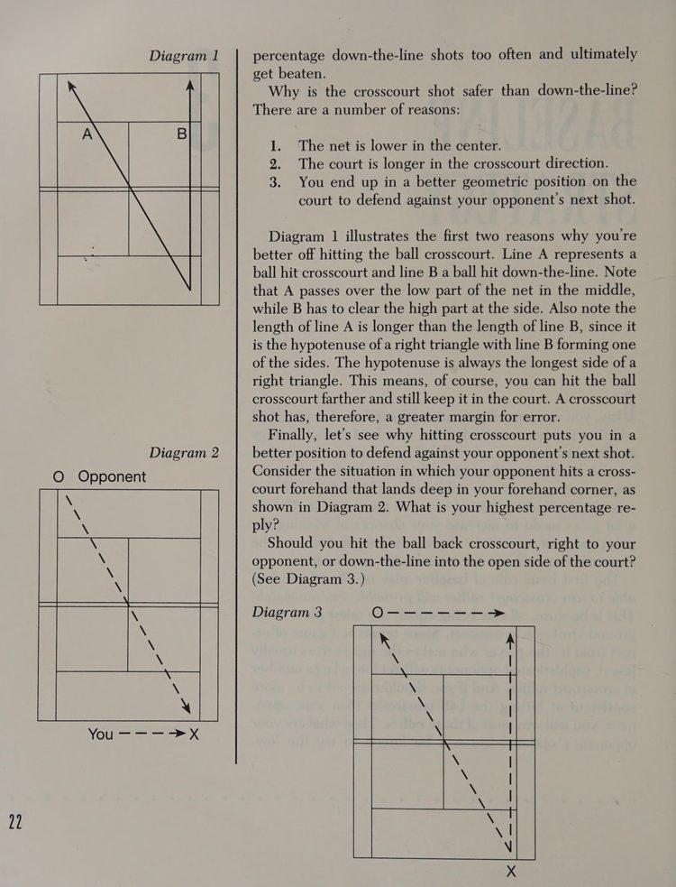
Hình 1: Sơ đồ hình học chứng minh tính an toàn của đường bóng chéo sân (cạnh huyền tam giác vuông dài hơn cạnh thẳng, lưới võng thấp ở tâm và vị trí bao quát góc phân giác).
4. Vị Trí Thu Hồi Trọng Tâm & Đường Phân Giác Phòng Ngự (The Bisector)
Một sai lầm rất phổ biến là người chơi sau khi đánh bóng xong thường vô thức chạy về đứng ngay tại điểm chính giữa của vạch cuối sân. Đó là một vị trí sai lầm về mặt hình học nếu quả bóng của bạn đang nằm ở một góc sân đối diện.
Nguyên tắc phân giác quy định rằng: vị trí đứng chuẩn xác của bạn phải nằm trên đường phân chia đôi góc đánh rộng nhất mà đối thủ có thể tạo ra từ vị trí chạm bóng của họ.
Nếu bạn đánh bóng chéo sân sâu vào góc phải của đối thủ, góc đánh nguy hiểm nhất của họ bao gồm một đường dọc dây vào góc trái của bạn và một đường chéo sân sắc bén vào góc phải. Đường phân giác của góc này sẽ hơi lệch về phía bên phải sân của bạn chứ không nằm ở chính giữa sân. Việc hiểu rõ quy luật phân giác giúp bạn luôn có mặt ở vị trí đón bóng sớm hơn đối thủ nửa giây, biến việc phòng ngự trở nên nhẹ nhàng và thanh thoát.
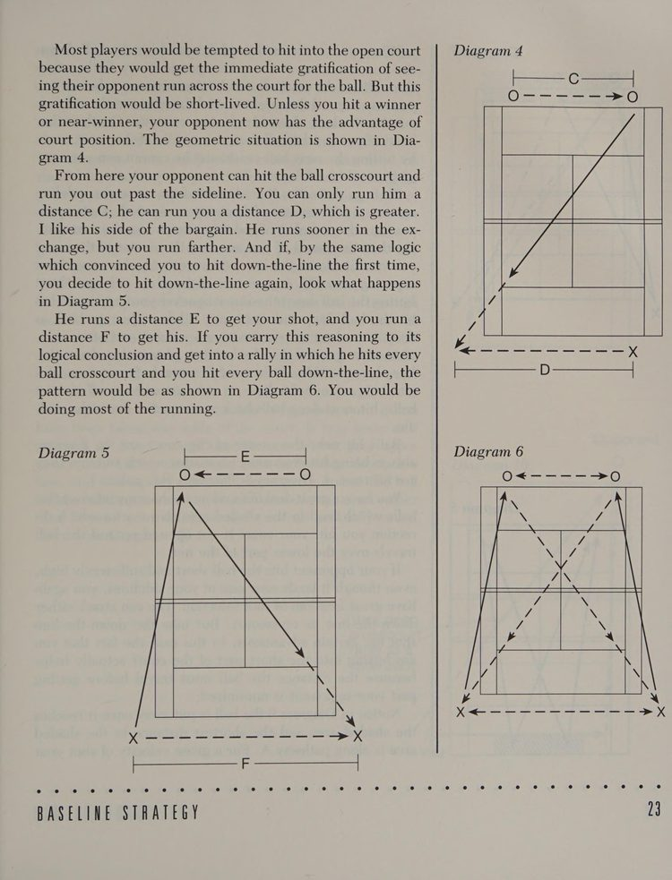
Hình 2: Sơ đồ phân tích góc đánh đối kháng — vị trí đứng tối ưu trên đường phân giác giúp bảo vệ cả hai phương án tấn công chéo sân và dọc dây của đối thủ.
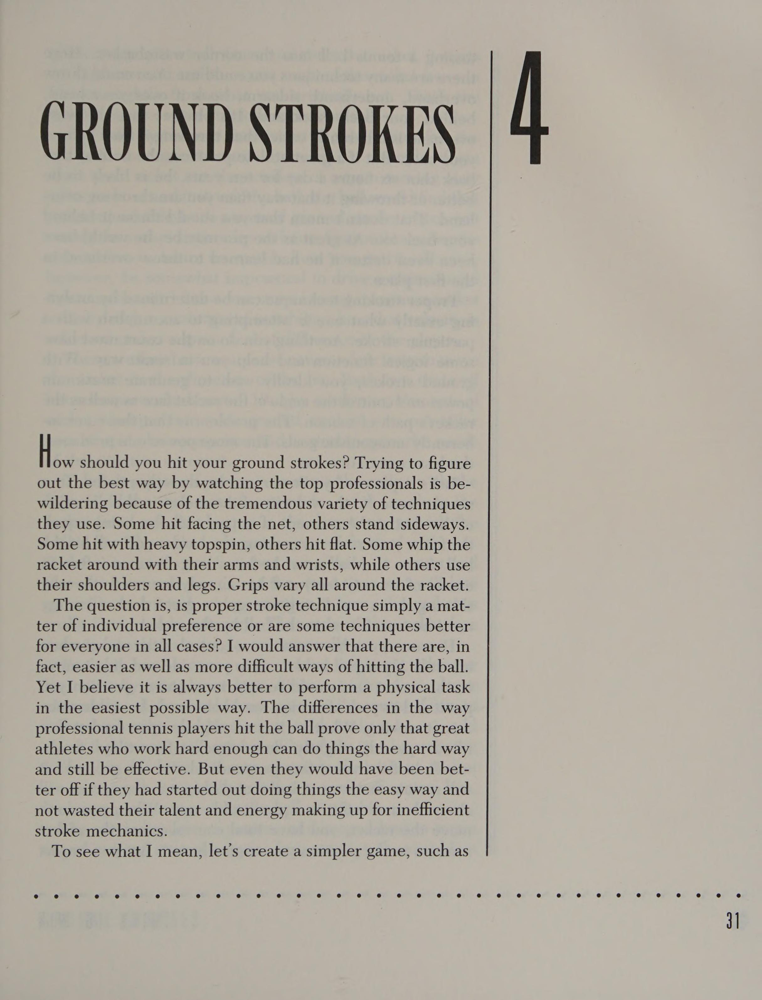
Hình 9: Các chuỗi phối hợp bóng có tỷ lệ phần trăm thắng điểm cao được kiểm chứng qua dữ liệu thi đấu chuyên nghiệp.
Phần II: Chiều Sâu Quỹ Đạo, Thời Gian Phản Xạ & Cơ Học Cú Đánh
Vũ khí kiểm soát độ sâu, thời gian bay của bóng và phân tích động lực học giữa Topspin, Flat và Slice
5. Vũ Khí Chiều Sâu: Rút Ngắn Thời Gian Đối Thủ & Mở Rộng Thời Gian Của Bạn
Trong các cuộc đọ sức từ vạch cuối sân, chiều sâu của đường bóng (depth) là vũ khí mang tính quyết định nhất đối với cục diện trận đấu. Một đường bóng có tốc độ bình thường nhưng rơi sát vạch cuối sân luôn nguy hiểm hơn gấp bội so với một cú đánh sấm sét nhưng rơi cạn ở giữa sân.
Khi bạn ép được quả bóng rơi sâu trong phạm vi một mét tính từ vạch đáy sân đối phương, ba hệ quả chiến thuật tất yếu sẽ xuất hiện:
Thứ nhất, đối thủ buộc phải lùi sâu ra sau vạch cuối sân, khiến khoảng cách di chuyển và thời gian quả bóng bay sang phần sân của bạn tăng lên đáng kể. Điều này mang lại cho bạn thêm thời gian quý báu để phục hồi vị trí thăng bằng và chuẩn bị phương án tấn công.
Thứ hai, việc phải lùi xa khiến các góc mở đánh bóng nguy hiểm của đối thủ bị triệt tiêu hoàn toàn. Một cú đánh từ cự ly ba mét phía sau vạch đáy sân chỉ có thể tạo ra những góc bóng rất hẹp và dễ đoán.
Thứ ba, người chơi phòng ngự ở thế lùi sâu buộc phải đánh bóng với lực mạnh hơn và quỹ đạo bổng hơn để bóng có thể qua lưới, biến họ thành mục tiêu dễ dàng cho những đợt phản công tiếp theo của bạn.
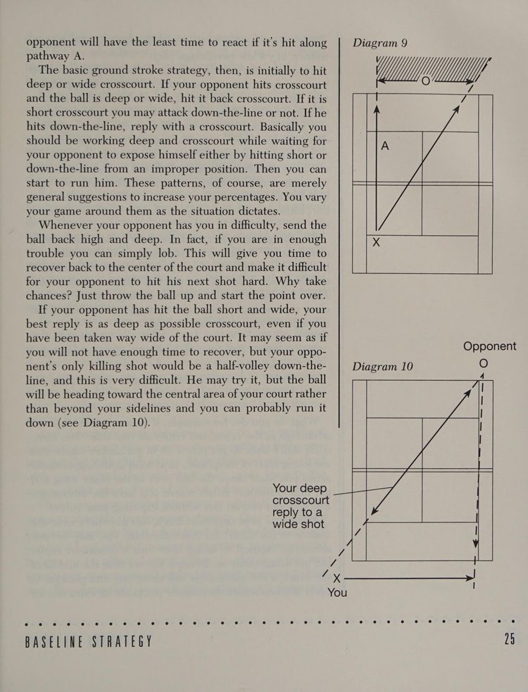
Hình 3: Sơ đồ phân tích chiều sâu đường bóng — bóng sâu đẩy đối thủ lùi xa, triệt tiêu góc đánh hiểm và mở rộng thời gian kiểm soát sân đấu cho người thực hiện.
6. Động Lực Học Của Cú Đánh Cuối Sân: Topspin, Flat & Slice
Quan sát các vận động viên chuyên nghiệp hàng đầu thi đấu có thể khiến người xem bối rối bởi sự đa dạng về kiểu cầm vợt và phong cách vung vợt. Tuy nhiên, mọi cú đánh cuối sân đều tuân thủ các nguyên lý vật lý bất biến:
Cú đánh xoáy cuộn (Topspin) là vũ khí nền tảng của quần vợt hiện đại. Nhờ hiệu ứng Magnus trong khí động học, quả bóng xoáy cuộn từ dưới lên trên sẽ bị kéo chúi xuống mặt sân với tốc độ rất nhanh. Điều này cho phép bạn vung vợt với tốc độ tối đa và đưa bóng qua lưới cao hơn từ sáu mươi centimet đến một mét so với mép lưới mà bóng vẫn nằm gọn trong sân. Đây là biểu tượng của lối chơi xác suất cao bền bỉ và uy lực.
Cú đánh phẳng (Flat) di chuyển với quỹ đạo thẳng tắp và tốc độ kinh hoàng, nhưng lại có biên độ sai số cực kỳ mong manh. Cú đánh phẳng chỉ nên được tung ra khi bạn nhận được một quả bóng nảy cao ở cự ly ngắn trong sân và đứng ở vị trí cao hơn mép lưới để dứt điểm ghi điểm trực tiếp.
Cú cắt xoáy ngược (Backspin hay Slice) có quỹ đạo bay là là mặt sân và trôi sâu. Cú slice cực kỳ hữu dụng trong việc thay đổi nhịp điệu trận đấu, buộc những đối thủ to cao phải cúi gập lưng để xúc bóng lên, đồng thời là phương án phòng ngự hữu hiệu khi bạn bị kéo dạt ra ngoài mép sân.
7. Cơ Chế Phát Lực Giải Phẫu: Thế Đứng Mở (Open Stance) & Thế Đứng Đóng (Closed Stance)
Rất nhiều người chơi lầm tưởng rằng lực đánh bóng đến từ sự co cơ của cánh tay và cổ tay. Đó là nguyên nhân khiến họ nhanh chóng kiệt sức và dễ dính chấn thương. Sức mạnh thực sự trong cú đánh cuối sân được sinh ra từ việc xoay khối thân trên và truyền lực từ mặt đất thông qua đôi chân.
Trong thế đứng truyền thống (Closed Stance), người chơi bước chân dẫn đường về phía trước theo hướng đánh, chuyển trọng lượng từ chân sau sang chân trước. Tư thế này mang lại sự ổn định cao và thích hợp cho những pha bóng tấn công tiến lên phía trước.
Trong khi đó, thế đứng mở hiện đại (Open Stance) đòi hỏi hai bàn chân đặt song song với lưới. Năng lượng được tích trữ bằng cách uốn cong đầu gối chân chịu lực và xoay hông ra sau, sau đó giải phóng đột ngột bằng chuyển động vặn xoắn thân mình như một chiếc lò xo bật mở. Thế đứng mở cho phép bạn phản xạ cực nhanh trước những đường bóng tốc độ cao và lập tức thu hồi bước chân về trung tâm sân sau khi chạm bóng.
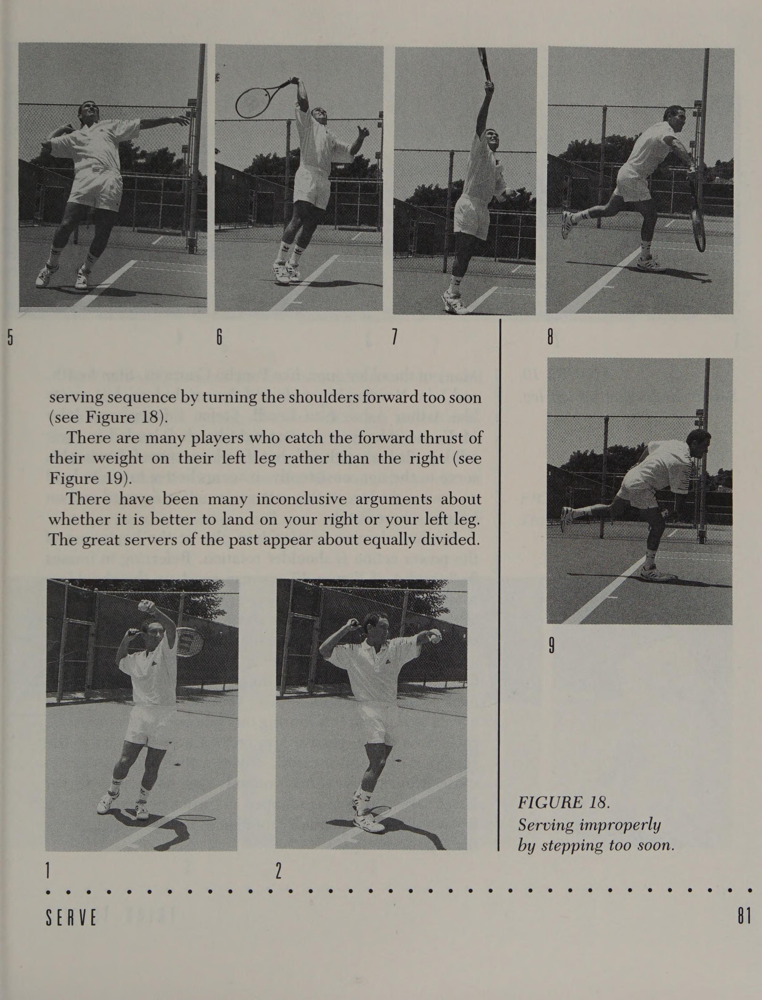
Hình 10: Nghệ thuật ngụy trang hướng bóng để gài bẫy đối thủ vào thế phán đoán sai bước chân.
Phần III: Chiến Thuật Lưới & Nghệ Thuật Tấn Công Áp Sát
Quy luật đảo ngược hình học trên lưới, đòn đánh dọc dây áp đảo, vị trí chắn góc phân giác và cú tiếp cận chuẩn mực
8. Sự Đảo Ngược Hình Học Ngoạn Mục: Tại Sao Trên Lưới Phải Đánh Dọc Dây?
Chiến lược tác chiến trên lưới, ở nhiều khía cạnh cốt lõi, diễn ra hoàn toàn trái ngược với chiến lược từ đường cuối sân. Như chúng ta đã phân tích, khi bạn đứng ở cuối sân và phân vân không biết đánh đi đâu, lựa chọn an toàn và thông minh nhất luôn là đánh chéo sân.
Thế nhưng, khoảnh khắc bạn tiến lên chiếm lĩnh vị trí trên lưới, quy luật này đảo ngược một trăm tám mươi độ: hướng đánh có xác suất thắng điểm cao nhất và an toàn nhất lại chính là đánh dọc dây (down-the-line)!
Để hiểu rõ nguyên lý này, hãy quan sát sơ đồ hình học góc mở. Khi bạn tung ra một cú vô-lê chéo sân nhưng không thể kết liễu điểm số ngay lập tức, bạn đã vô tình kéo đối thủ ra xa về một bên sân và mở toang góc đánh dọc dây trống trải cho họ. Đối thủ chỉ cần một cú passing shot đơn giản dọc theo dây biên là có thể dễ dàng ghi điểm trực tiếp qua tầm với của bạn.
Ngược lại, khi bạn dập quả vô-lê dọc theo đường biên sâu xuống góc sân đối diện, góc đánh trả của đối thủ bị bóp nghẹt ở mức tối đa. Quả bóng chuyền passing dọc dây của họ sẽ phải bay qua một hành lang rất hẹp và bay thẳng vào tầm vợt của bạn, trong khi đường bóng chéo sân sẽ phải vượt qua chặng đường dài hơn và bay qua phần lưới cao ở hai bên cột biên.
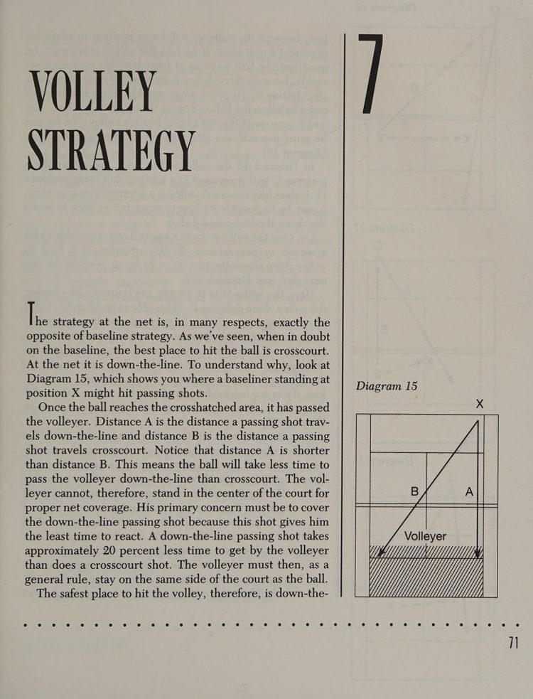
Hình 4: Phân tích góc chuyền passing shot của đối thủ — đánh vô-lê dọc dây triệt tiêu góc mở, ép đối phương vào thế bị động và bảo vệ toàn diện phần sân nhà.
9. Định Vị Vị Trí Chắn Góc Phân Giác Trên Lưới (The Net Bisector)
Bí quyết của những bậc thầy bắt lưới như John McEnroe hay Stefan Edberg không phải là tốc độ chạy nước rút, mà là khả năng chọn vị trí hình học hoàn hảo để đón đầu hướng bóng của đối phương.
Khi bạn ép quả bóng sâu vào góc phải của đối thủ, bạn không được đứng ở chính giữa lưới. Bạn phải lập tức dịch chuyển sang bên phải sân khoảng một đến hai mét, đứng chính xác trên đường phân giác nối từ vị trí chạm bóng của đối thủ tới hai góc xa nhất mà họ có thể đưa bóng tới.
Đứng trên đường phân giác đảm bảo rằng bạn chỉ cần một bước chân ngắn là có thể với tới quả bóng passing dọc dây nguy hiểm nhất, đồng thời vẫn đủ thời gian bay người chặn đứng cú passing chéo sân bay chậm hơn. Một tay vợt biết chọn vị trí phân giác trên lưới sẽ tạo cho đối thủ cảm giác ngột ngạt như thể trước mặt họ là một bức tường khổng lồ không có lối thoát.
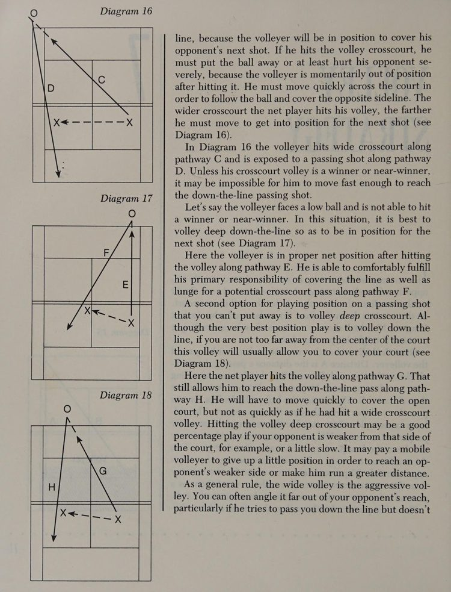
Hình 5: Sơ đồ dịch chuyển vị trí trên lưới theo đường phân giác — bảo vệ góc dọc dây gần nhất và bao quát đường bóng chéo sân.
10. Cú Đánh Tiếp Cận Lưới Chuẩn Xác (The Approach Shot)
Cú tiếp cận lưới là chiếc cầu nối quyết định giữa giai đoạn giằng co cuối sân và đòn kết liễu trên lưới. Một cú approach shot tồi sẽ biến bạn thành "bia đỡ đạn" cho những cú passing uy lực của đối thủ.
Nguyên tắc vàng của cú tiếp cận lưới bao gồm:
Thứ nhất, chỉ lên lưới khi bạn đón được một quả bóng ngắn nảy trong hoặc gần vạch giao bóng. Đừng bao giờ mạo hiểm lên lưới từ phía sau vạch đáy sân trừ khi bạn thực hiện chiến thuật giao bóng lên lưới có chủ đích.
Thứ hai, hướng đánh của cú tiếp cận hầu như luôn phải đi dọc dây sâu vào góc sân yếu của đối phương (thường là góc trái tay). Cú đánh dọc dây rút ngắn thời gian di chuyển lên lưới của bạn và cho phép bạn áp sát lưới theo một đường thẳng trực diện.
Thứ ba, kỹ thuật dừng bước bật tách (split-step) là bắt buộc. Khi đối thủ bắt đầu đưa vợt về phía trước để tiếp xúc bóng, bạn phải lập tức dừng đà chạy và thực hiện cú bật nhẹ bằng hai chân để hạ thấp trọng tâm. Cú split-step giúp bạn triệt tiêu quán tính chạy tới trước và sẵn sàng bùng nổ sang bất kỳ hướng nào để bắt cú vô-lê dứt điểm.
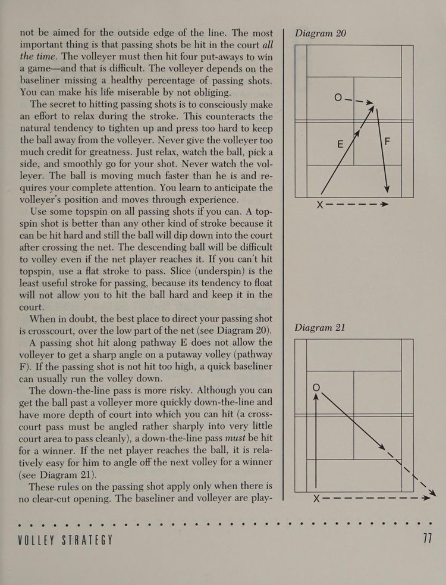
Hình 6: Quỹ đạo cú tiếp cận dọc dây và lộ trình di chuyển lên lưới tối ưu — khép góc passing và sẵn sàng dứt điểm vô-lê ghi điểm.
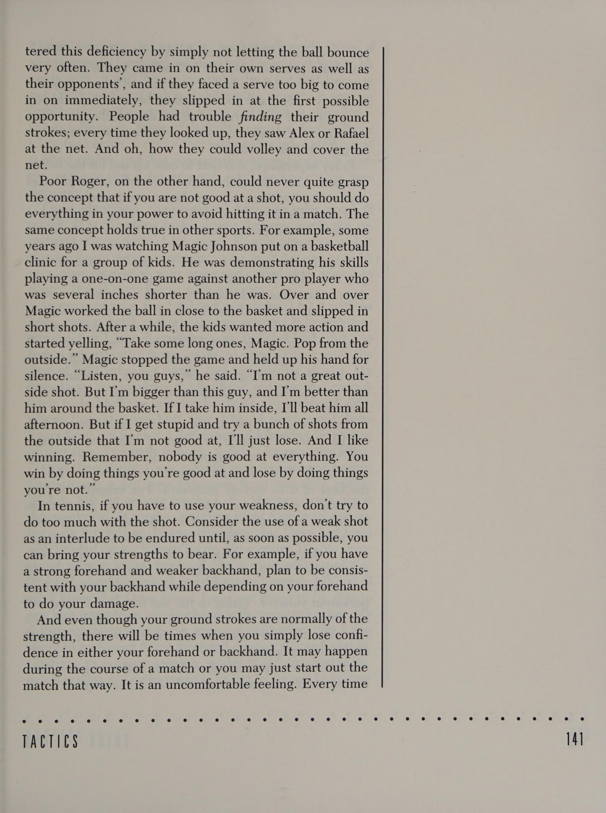
Hình 11: Quản trị tâm lý khi cầm giao bóng định đoạt trận đấu (Serving for the Match) mà không rơi vào trạng thái sợ hỏng.
Phần IV: Cú Đánh Đặc Biệt, Tác Chiến Ngoại Cảnh & Tâm Lý Chiến
Nghệ thuật trả giao bóng, đối phó lối chơi cù nhầy, chiến thuật gió bão và bản lĩnh tâm lý của nhà vô địch
11. Nghệ Thuật Trả Giao Bóng Trước Các Tay Giao Bóng Sấm Sét (Serve Return)
Đối mặt với một tay vợt sở hữu cú giao bóng búa bổ ở những thời điểm điểm số quyết định là một trong những thử thách căng thẳng nhất trong môn thể thao này. Bạn không thể chỉ đứng nhìn và cầu nguyện đối thủ mắc lỗi giao bóng kép; bạn cần xây dựng một chiến lược trả giao bóng khoa học.
Thứ nhất, việc chọn vị trí đứng phải dựa trên góc mở hình học của ô giao bóng. Thay vì đứng thụ động, hãy quan sát thói quen tung bóng của đối thủ để phán đoán hướng bóng phẳng, xoáy ngang hay xoáy nảy.
Thứ hai, nguyên tắc sống còn khi đón quả giao bóng uy lực là rút ngắn tối đa biên độ mở vợt ra sau. Bạn không có đủ thời gian cho một cú vung tay đầy đủ. Hãy xoay vai nhanh và đưa mặt vợt ra chặn bóng (block return) tương tự như một cú vô-lê tầm xa từ cuối sân, mượn chính lực bóng của đối phương để đẩy bóng ngược trở lại.
Thứ ba, mục tiêu trả giao bóng an toàn và hiệu quả nhất là đưa bóng sâu vào chính giữa sân hoặc hướng thẳng vào chân của đối thủ nếu họ lao lên lưới, khiến họ không thể mở rộng góc tấn công ở cú đánh tiếp theo.
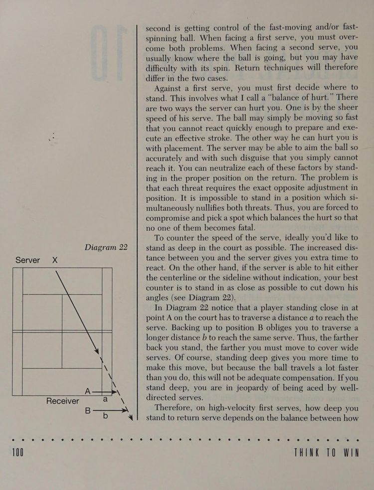
Hình 7: Sơ đồ hình học của ô giao bóng và vị trí đứng đón trả giao bóng tối ưu — rút ngắn góc mở và khống chế uy lực của quả giao bóng một.
12. Đòn Đánh Đặc Biệt: Cú Lốp Bóng (Lob) & Cú Bỏ Nhỏ Tinh Tế (Drop Shot)
Cú lốp bóng và cú bỏ nhỏ là hai thái cực vũ khí tạo nên chiều sâu chiến thuật và sự bất ngờ làm đảo lộn hoàn toàn nhịp điệu thi đấu của đối phương.
Cú lốp bóng phòng thủ đòi hỏi bạn phải đưa bóng lên thật cao trên không trung để kéo dài thời gian bóng bay, giúp bạn tái thiết lập vị trí thăng bằng sau một đợt bị dồn ép nghẹt thở. Trong khi đó, cú lốp bóng tấn công bằng xoáy cuộn topspin lại được vung vợt chớp nhoáng khi đối thủ áp sát lưới, đưa bóng bay sạt qua đầu đối phương rồi cuộn rơi nhanh vào phần sân trống cuối sân để ghi điểm trực tiếp.
Cú bỏ nhỏ chỉ thực sự phát huy sức mạnh khi bạn che giấu được ý đồ đến giây phút cuối cùng. Động tác chuẩn bị phải giống hệt một cú cắt bóng sâu thông thường, nhưng ngay tại khoảnh khắc tiếp xúc, cổ tay nới lỏng nhẹ nhàng để hãm xung lực, khiến quả bóng rơi nhẹ nhàng vừa đủ qua mép lưới và nảy hai lần trước khi đối thủ kịp chạy tới.
13. Khắc Chế Lối Chơi Cù Nhầy & Nghệ Thuật Đánh Trong Gió Bão
Nhiều tay vợt có kỹ thuật tốt thường phát điên và thất bại cay đắng trước những đối thủ có lối chơi phòng thủ cù nhầy (pusher hay grinder) — những người chuyên trả những quả bóng bổng lững lờ sang giữa sân và chờ bạn tự đánh hỏng.
Chìa khóa để đè bẹp kiểu đối thủ này là sự kiên nhẫn sắt đá. Đừng cố gắng tung ra những cú đánh ăn điểm mạo hiểm từ các quả bóng không có lực. Hãy duy trì thế trận bóng bền sâu đều đặn, chủ động kéo họ lên lưới bằng những đường bóng ngắn có chủ đích rồi tung đòn passing hoặc lốp bóng để kết liễu.
Khi thi đấu trong điều kiện gió bão, người chiến thắng luôn là người nắm vững quy luật khí động học:
Khi ở phần sân ngược gió (đối đầu với gió), lực cản của gió sẽ giữ bóng lại trong sân. Bạn có thể vung vợt mạnh mẽ hơn, đánh bóng bổng hơn qua lưới và tích cực tiến lên lưới vì đối thủ xuôi gió sẽ rất khó kiểm soát lực đánh passing shot.
Ngược lại, khi ở phần sân xuôi gió (gió thổi sau lưng), quả bóng sẽ bay xa hơn bình thường rất nhiều. Bạn phải tăng cường độ xoáy topspin để ghìm bóng xuống sân và tránh lên lưới vì gió sẽ đẩy quả bóng của bạn bay vọt ra ngoài đường biên. Đối với gió thổi tạt ngang, hãy luôn hướng đường bóng lệch một khoảng về phía đón gió để sức gió kéo quả bóng về đúng mục tiêu mong muốn.
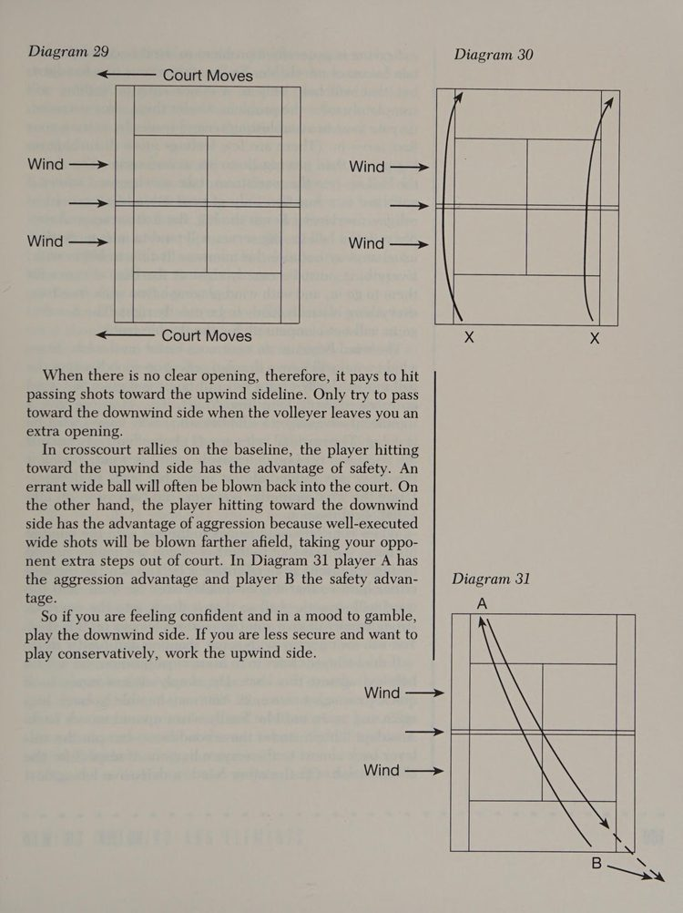
Hình 8: Sơ đồ hiệu chỉnh hướng đánh và độ xoáy theo các hướng gió — ngược gió, xuôi gió và gió tạt ngang sân đấu.
14. Bản Lĩnh Tâm Lý Thi Đấu & Kiểm Soát Áp Lực Nghẹt Thở (Choking)
Hiện tượng nghẹt thở tâm lý (choking) — tức trạng thái đánh mất phong độ và cứng đờ cơ bắp trong những thời khắc quan trọng — là kẻ thù lớn nhất của mọi vận động viên. Nó không xuất phát từ việc thiếu kỹ năng, mà là do tâm trí bị quá tải bởi nỗi sợ hãi thất bại và sự ám ảnh về kết quả.
Là một tiến sĩ tâm lý học và cựu vận động viên vô địch, tôi muốn khẳng định rằng: bạn không thể loại bỏ hoàn toàn sự lo âu, nhưng bạn hoàn toàn có thể kiểm soát và định hướng nó.
Để vượt qua trạng thái căng thẳng, hãy áp dụng quy trình kiểm soát tinh thần ba bước:
Thứ nhất, kiểm soát thể chất: thở sâu bằng cơ hoành, hạ lỏng vai và nới lỏng lực cầm cán vợt giữa các điểm số để ngăn chặn việc tích tụ axit lactic và co thắt cơ.
Thứ hai, tập trung vào quy trình vận động: đừng nghĩ về tỷ số trận đấu hay việc bạn sẽ thắng hay thua. Hãy hướng toàn bộ tâm trí vào những hành động kỹ thuật cụ thể như "nhìn bóng đến điểm chạm" hay "mở vợt sớm".
Thứ ba, tin tưởng vào kế hoạch chiến thuật định trước: một chiến thuật rõ ràng sẽ bảo vệ bạn khỏi sự dao động cảm xúc, giữ cho bạn sự điềm tĩnh và bản lĩnh của một nhà vô địch đích thực.